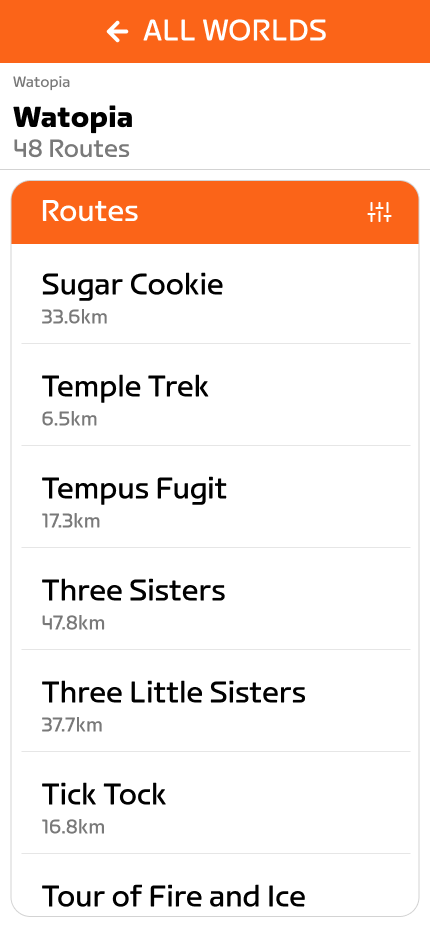
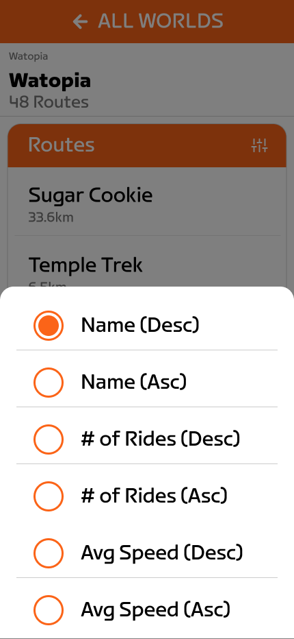
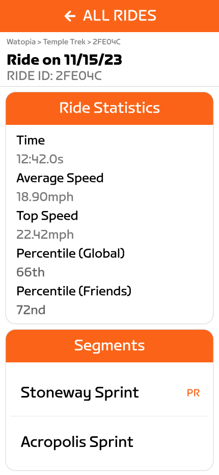
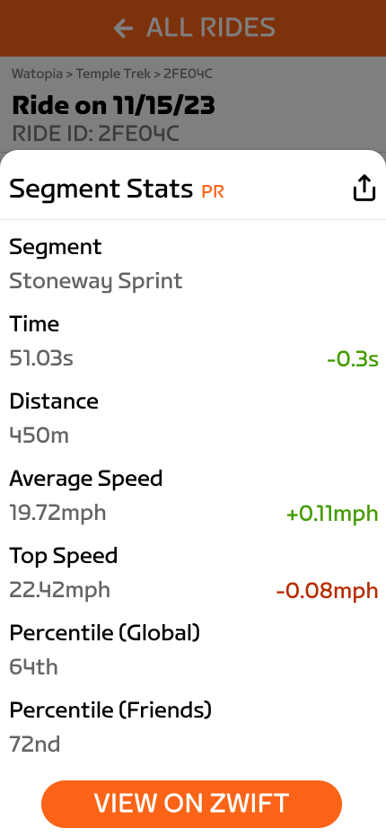
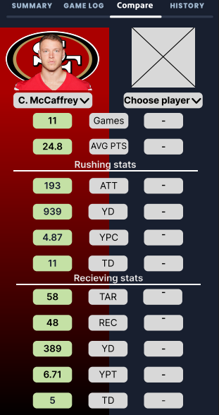
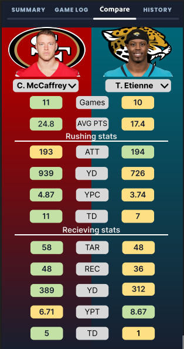
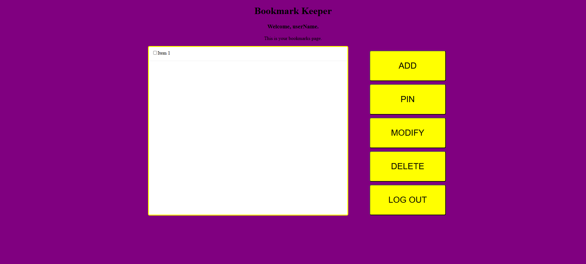

Zwift Redesign
11/24/2023
Project Description
This class project focused on redesigning the Zwift Companion app to help users easily find their personal
bests, view past rides, explore worlds, and track specific metrics to improve their biking performance.
While designing new pages, we worked to maintain the app's existing design language and incorporated
additional tabs to enhance usability. These new tabs were intended to allow users to access their past rides
and personal bests more efficiently, improving the overall user experience.




Sleeper Compare Addition
4/8/2024
Project Description
This was a class project that involved working independently to redesign an app by adding a new feature. I
chose to
implement a comparison tool within the fantasy football app, Sleeper. Many users often compare players
before games or trades, but the app currently lacks this functionality, forcing users to rely on external
websites for comparisons. The objective of this project was to address this gap by creating a positional
comparison tool, allowing users to compare players directly within the app.


Bookmark Web application
4/8/2024
Project Description
This was another class project where we worked in teams of three to create a functional web application that
allows users to save bookmarks of URLs. I was the sole UX designer for the project, though my team advocated
for a purple and yellow color scheme to align with UWSP’s branding. The design was focused on minimizing the
time users spend searching for and adding bookmarks. To achieve this, I created large, easily identifiable
buttons to enhance user interaction and streamline the overall experience.

